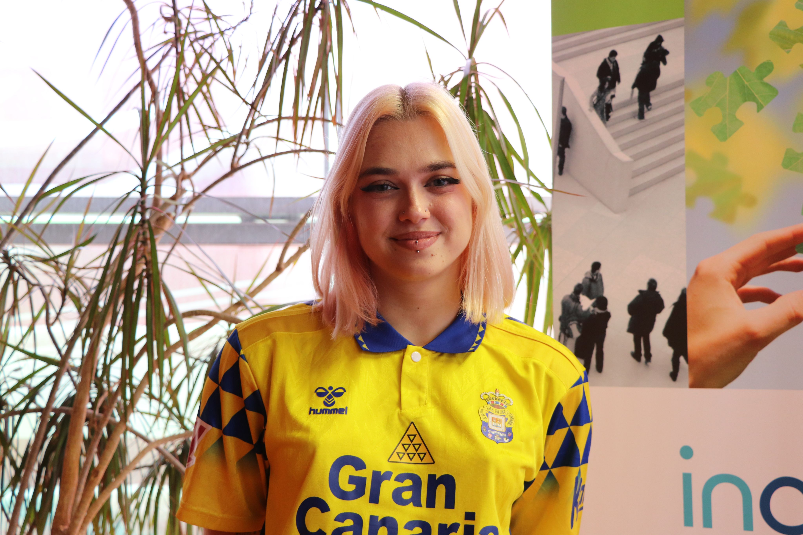
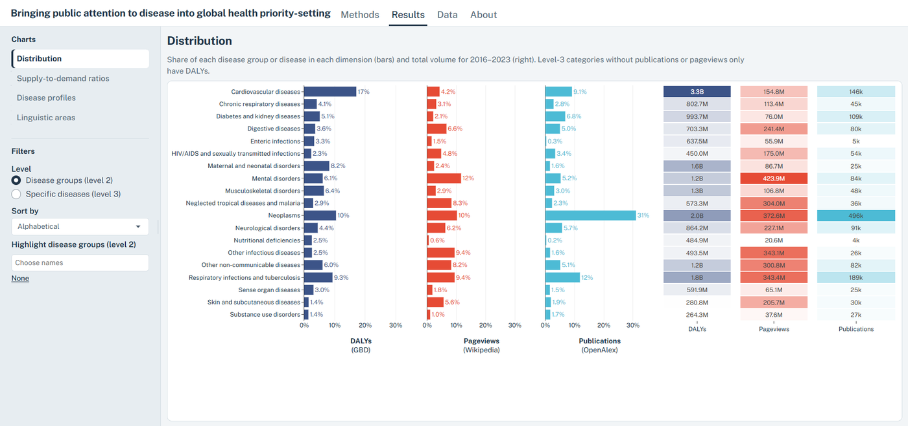
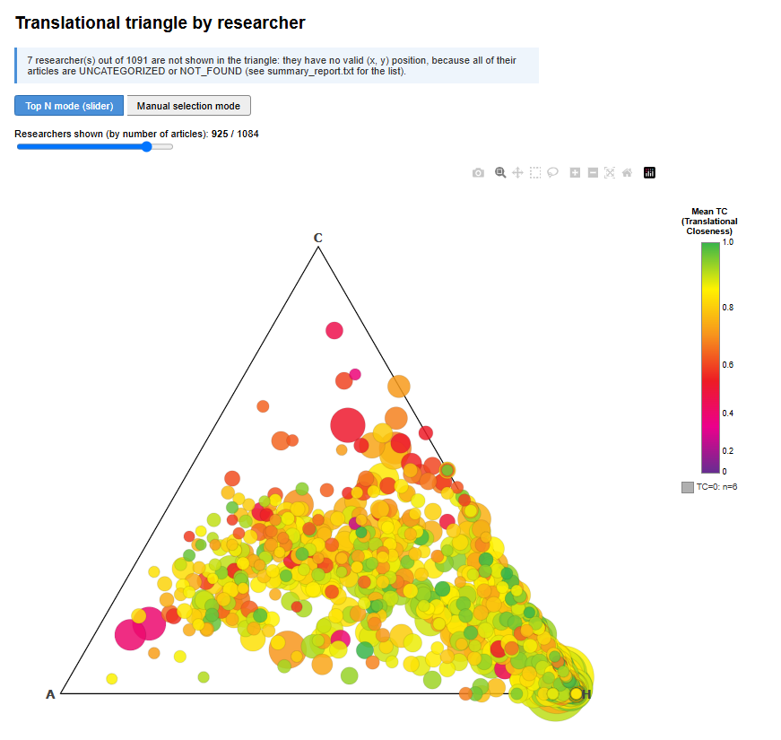

Graduate research staff at INGENIO (CSIC–UPV). I build tools to collect, analyse and visualise data on science, the media and social networks.

I studied the Double Degree in Computer Engineering and Mathematics at the University of Granada.
During this time, I did internships at two companies, spending six months at CEPRUD and another six at EC3metrics.
Since March 2026 I have been working as graduate research staff at INGENIO (CSIC–UPV) in Valencia, as part of CSIC's Momentum programme. Since then I have been involved in the projects listed below.
Thanks to Momentum, I am studying for a Master's Degree in Data Science at the Universitat Oberta de Catalunya (UOC), the field I want to build my career in.
INGENIO · Momentum programme
Interactive application that presents the results of an INGENIO preprint on the mismatch between disease burden, public attention on Wikipedia and research effort. Users can explore the data through a sidebar menu with selection filters and interactive charts, including a ternary triangle.

INGENIO · Momentum programme
Python tool that measures to what extent the biomedical research of a group of researchers goes on to influence research involving people. It downloads data from the Scopus and PubMed APIs, cleans and merges it, computes new metrics for each researcher and presents the results in an interactive chart.

INGENIO · Momentum programme
Study of how the controversy sparked in 2023 by a letter labelling the integrated information theory of consciousness as pseudoscience played out on Twitter. I developed the whole project, from collecting and processing the tweets to building a network of interactions between users. On that network I applied graph analysis and community detection algorithms, along with topic models (LDA and BERTopic) to identify what people were discussing, all integrated into an interactive Streamlit application.